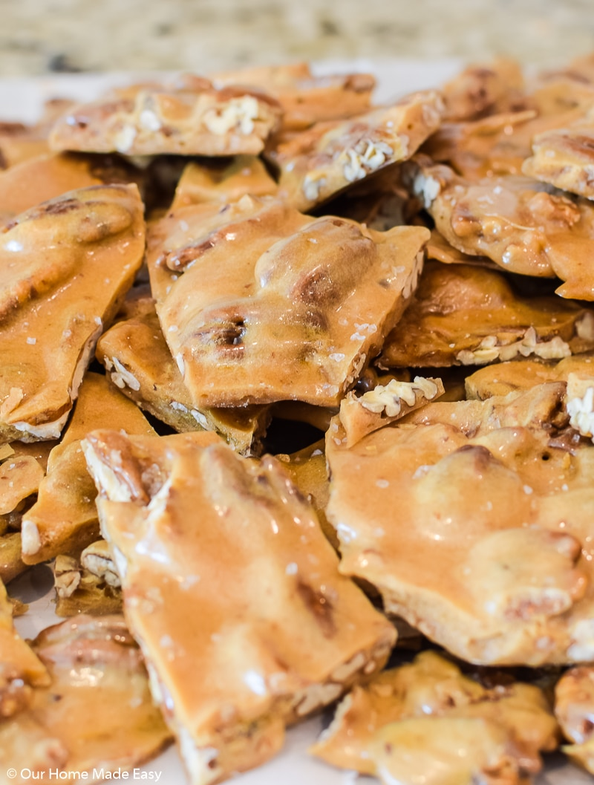

Pecan Brittle

Sweet Buttery Pecan Brittle
Butter Pecan Brittle is one of those treats that once you have it, you’ll want to know how to make your own! Luckily, it’s pretty simple to make. This recipe is such a great change-up from the usual or expected brownies or cake.
Ingredients
- 3 cups of pecans
- 2 cups granulated sugar
- 1 cup light corn syrup
- 1/2 cup water
- 1/2 stick unsalted butter
- 2 teaspoons baking soda
- A1 Tablespoon pure vanilla extract
- Sea Salt for sprinkling
Steps
- Preheat oven to 350 degrees F.
- Line 1 baking sheet with parchment paper.
- Spread pecans on a baking sheet lined with parchment and toast in the oven for 5 minutes, until the pecans are fragrant and snap when broken. Set aside.
- Combine sugar, corn syrup, and water in a non-stick 3.5 quart or larger saucepan over medium heat, stirring occasionally until the sugar is dissolved and the mixture is clear. Depending on your stove top, this may take 10 minutes or more.
- Put a candy thermometer in the pan, increase the heat to medium-high and cook without stirring until the mixture reaches 230 degrees F on the candy thermometer.
- Once this happens, add the butter and toasted pecans.
- Stir the mixture constantly until it reaches 305 degrees F. It will bubble and be incredibly hot, so be careful. When it reaches the desired temperature, it should be caramel colored and fragrant. You will stir for several minutes.
- Remove from heat and stir in baking soda and vanilla. The mixture will bubble, so it is again important to use caution. If the mixture hardens too quickly, put it over either the still-warm burner or low heat until it comes back together.
- Pour the mixture onto parchment paper. Smooth out with a wooden spoon. Sprinkle Sea Salt over the brittle.
- Allow the brittle to cool for at least 30 minutes before breaking into bite-sized pieces